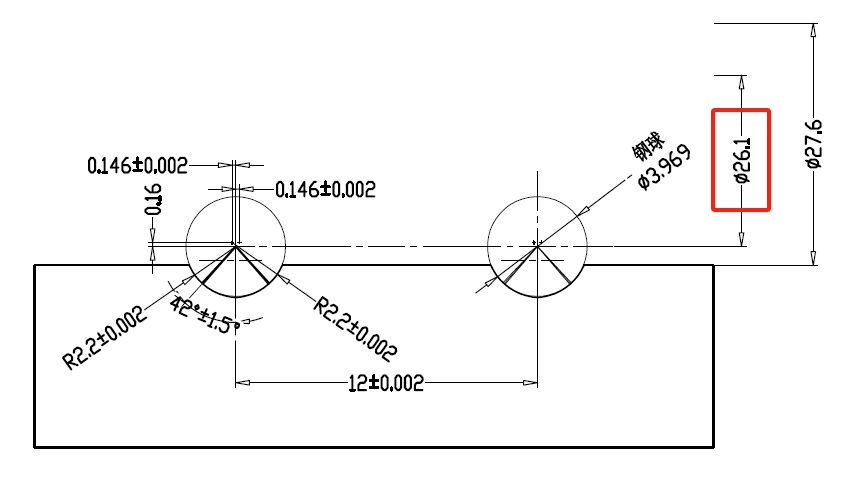
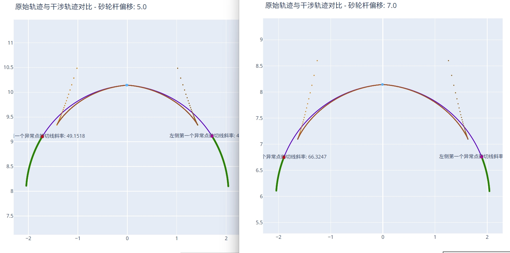
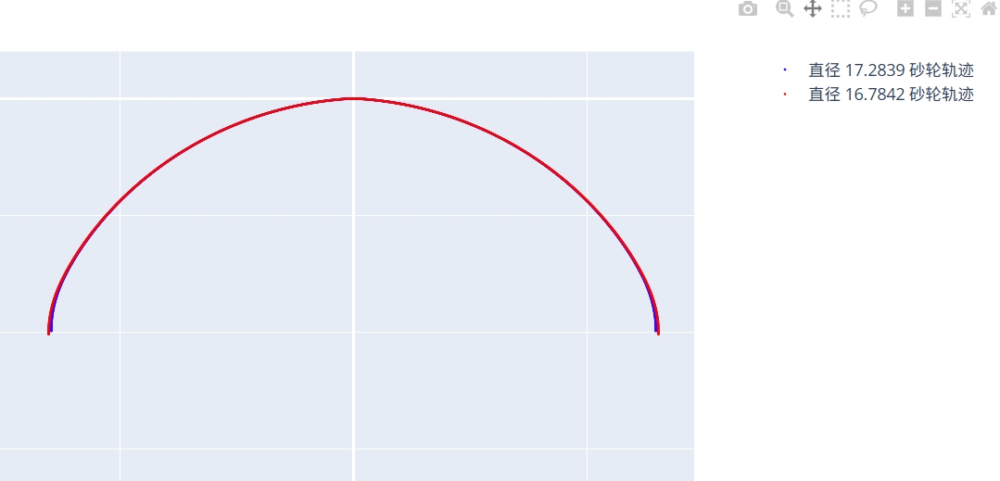

基本参数
本节详细介绍软件中最常用的基本参数设置项，涵盖工件参数、砂轮参数、齿型 DXF 文件及类型等关键信息。
工件类型
- 选项:
内螺纹/外螺纹 - 设置: 请根据实际加工的工件选择对应的类型。
工件中径
- 定义: 设置工件的中径尺寸。
- 单位:
- 说明: 此参数通常可在工件图纸中找到。例如，在下图红框中即标示了中径尺寸：  图 1: 工件中径在图纸中的标注示例
导程
- 定义: 设置工件的导程。
- 单位:
- 说明:
- 对于单头螺纹（或丝杠），导程 = 螺距。
- 对于多头螺纹（或丝杠），导程 = 螺距 × 头数。
砂轮杆偏移工件中心最小距离
- 定义: 砂轮中心线相对于工件中心线的最小偏移量。偏移距离为 时，表示砂轮中心与工件中心重合。
- 关联性: 此参数与砂轮直径紧密相关，并直接影响计算生成的砂轮轮廓曲线。
设置指南:
内螺纹情况:
- 理论最小偏移可设置为 （即砂轮在工件中心加工），此时允许使用的砂轮直径最大。
- 注意: 过小的偏移距离（包括 ）可能导致滚道接触线中的无效区域增大，进而使实际加工出的滚道与目标滚道产生较大偏差。这一点在双圆弧等复杂齿型中尤为明显。
- 下图对比了偏移距离为 和 时，滚道异常点出现的位置差异：  图 2: 砂轮杆偏移对滚道异常点的影响 (左: 5mm, 右: 7mm)
- 观察可见，偏移距离越小，异常点（计算失效点）出现得越早，可能导致后续滚道部分无法按预期形状正确加工。
外螺纹情况:
- 最小偏移距离没有固定理论值，需要根据工件外径和计划安装的砂轮直径进行测试，以找到一个合适的值。
- 建议先设置一个估算值，然后检查该偏移下软件计算出的可用砂轮直径范围是否满足要求。
砂轮杆偏移工件中心最大距离
- 定义: 砂轮中心线相对于工件中心线的最大允许偏移量。
设置指南:
内螺纹情况:
- 最大偏移距离主要受工件内径和砂轮安装角的限制。
- 偏移距离越大，所需的砂轮直径越小。
- 注意: 设置的偏移距离不能过大，否则可能导致砂轮杆在加工过程中与工件内壁发生干涉碰撞。
- 您可以通过查阅 [分析工具] -> [最大偏移计算] 章节（如果手册中有此章节）或使用相关功能来辅助计算允许的最大偏移值。
外螺纹情况:
- 最大偏移距离主要影响可使用的砂轮最大直径。
- 与内螺纹的最小偏移类似，过大的偏移同样可能增大滚道接触线的无效区域，影响加工精度。
砂轮直径间隔
- 定义: 设置在计算修整路径时，相邻两个砂轮直径之间的步长。
- 单位:
- 说明:
- 由于不同的砂轮直径（对应不同的偏移距离）会产生不同的修整曲线，此参数决定了修整代码的精细程度。
- 较小的间隔意味着对砂轮磨损的适应性更好，精度更高，但会导致计算时间增加和生成的代码量增大。
- 较大的间隔则反之。
- 精度验证:
- 软件可能提供一个名为
两个相邻砂轮直径间隔下砂轮形状轨迹对比HTML文件的分析工具或输出文件。 - 通过检查此文件（如下图所示的对比曲线），可以判断当前设置的间隔值是否足够满足加工的精度要求。  图 3: 不同砂轮直径间隔下的修整曲线对比示例
- 软件可能提供一个名为
砂轮安装角
- 定义: 设置砂轮轴线与工件轴线在特定平面内的夹角。
- 核心概念: 干涉磨削通常采用小于工件标准螺旋升角的砂轮安装角进行加工。
- 参数辅助:
- 参数输入框右侧通常会显示当前工件参数计算出的标准螺旋升角（）。
- 勾选旁边的复选框，可自动将标准螺旋升角填充到此参数中（即非干涉磨削设置）。
- 影响:
- 减小安装角:
- 理论上可以加工更大导程或更小内径的工件。
- 当设置为 时，相当于砂轮杆水平加工，可最大限度降低某些情况下的加工干涉风险。
- 注意: 砂轮安装角与标准螺旋升角的差值越大，滚道接触线的无效区域也可能随之增大。如果无效区域扩展到了滚道上必须保证精度的关键部位，则表明当前安装角设置过小。此时，应尝试增大安装角或调整砂轮杆偏移距离。
- 减小安装角:
DXF 齿型文件
- 功能: 指定并导入包含目标齿型轮廓的 DXF 格式文件。
- 操作: 点击浏览按钮或输入完整文件路径。
DXF 齿型类型
- 选项:
法向/轴向/端面 - 选择依据: 根据导入的 DXF 文件所代表的齿型截面类型进行选择。
- 常见应用:
- 法向 (Normal Profile): 常用于普通螺母、丝杠。DXF 文件定义的是垂直于螺旋线的截面齿型。
- 轴向 (Axial Profile): 部分蜗杆加工可能采用。DXF 文件定义的是沿工件轴线方向的截面齿型。
- 端面 (Transverse Profile): 常用于螺杆转子等。DXF 文件定义的是垂直于工件轴线的截面（即端面）齿型。